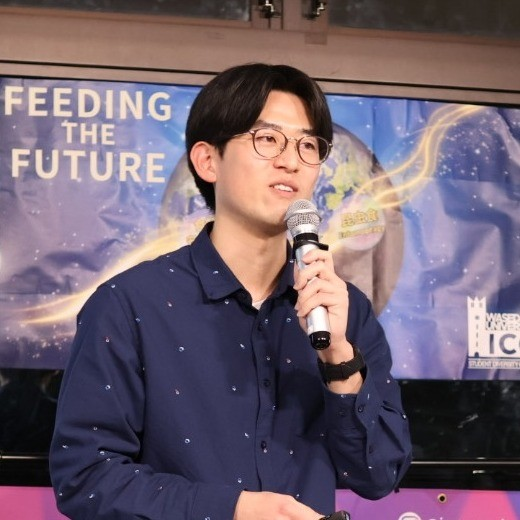

Representative
代表紹介

早稲田大学 一貫制博士課程 / 代表
藍原 朋弘Tomohiro Aihara
早稲田大学 朝日研究室にて、コオロギの様々な行動の解明に取り組む研究者。
旧 内閣府ムーンショット目標5 学生社会実装グループで培った知見を社会に還元すべく、学生チームを率いて社会実装を推進しています。

早稲田大学 一貫制博士課程 / 代表
早稲田大学 朝日研究室にて、コオロギの様々な行動の解明に取り組む研究者。
旧 内閣府ムーンショット目標5 学生社会実装グループで培った知見を社会に還元すべく、学生チームを率いて社会実装を推進しています。